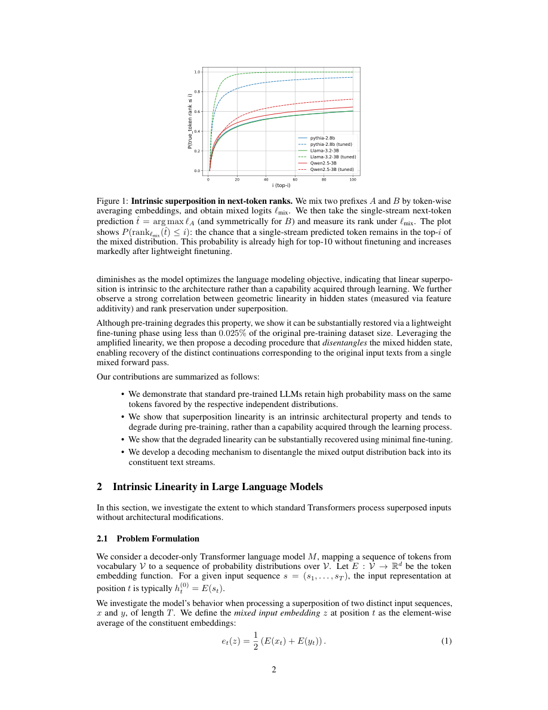

#1
★ 8/10
Your Transformer Can Hold Two Thoughts at Once: Evidence of Linear Superposition in LLMs
Your Transformer Can Hold Two Thoughts at Once: Evidence of Linear Superposition in LLMs

图 Figure · Page 2 of paper
🎯 （AI 中文深度分析暂不可用：Anthropic API 额度不足。英文栏为论文原文摘要，下方链接均可正常访问。）
While Large Language Models (LLMs) rely on highly non-linear components, in this work we demonstrate that they exhibit fundamental linearity: when inputs from distinct text streams are linearly combined, the model outputs a superposition…
| 维度 | 中文 | English |
|---|---|---|
| ❓ 待解决 的问题 |
（AI 中文深度分析暂不可用：Anthropic API 额度不足。英文栏为论文原文摘要，下方链接均可正常访问。） | While Large Language Models (LLMs) rely on highly non-linear components, in this work we demonstrate that they exhibit fundamental linearity: when inputs from distinct text streams are linearly combined, the model outputs a superposition of the individual next-token distributions. We term this the \textit{Superposition Linearity Hypothesis}. We provide evidence that superposition is an intrinsic property of the Transformer architecture rather than an emergent consequence of training; in fact, we observe that it tends to diminish as pretraining progresses. However, we demonstrate that linearity can be substantially restored through lightweight fine-tuning, significantly reducing the divergence between the predicted next-token distribution and the average of the individual next-token distributions. Finally, we introduce a guided decoding procedure that disentangles superposed outputs, enabling the simultaneous generation of two coherent continuations from a single forward pass. |
| 💡 解决 的亮点 |
（AI 中文深度分析暂不可用：Anthropic API 额度不足。英文栏为论文原文摘要，下方链接均可正常访问。） | See the paper’s original abstract in the "Problem / 背景" row above. |
| 🧪 实验 内容 |
（AI 中文深度分析暂不可用：Anthropic API 额度不足。英文栏为论文原文摘要，下方链接均可正常访问。） | See the paper’s original abstract in the "Problem / 背景" row above. |
| 📊 实验 结果 |
（AI 中文深度分析暂不可用：Anthropic API 额度不足。英文栏为论文原文摘要，下方链接均可正常访问。） | See the paper’s original abstract in the "Problem / 背景" row above. |
| 🏁 结论 | （AI 中文深度分析暂不可用：Anthropic API 额度不足。英文栏为论文原文摘要，下方链接均可正常访问。） | See the paper’s original abstract in the "Problem / 背景" row above. |
| 🔗 论文 链接 |
arXiv: 2609.29845v1 · 📥 PDF | |
⚙️ Method · 方法详解
（AI 中文深度分析暂不可用：Anthropic API 额度不足。英文栏为论文原文摘要，下方链接均可正常访问。）
See the paper’s original abstract in the "Problem / 背景" row above.
🌟 Why It Matters · 为什么重要
（AI 中文深度分析暂不可用：Anthropic API 额度不足。英文栏为论文原文摘要，下方链接均可正常访问。）
See the paper’s original abstract in the "Problem / 背景" row above.